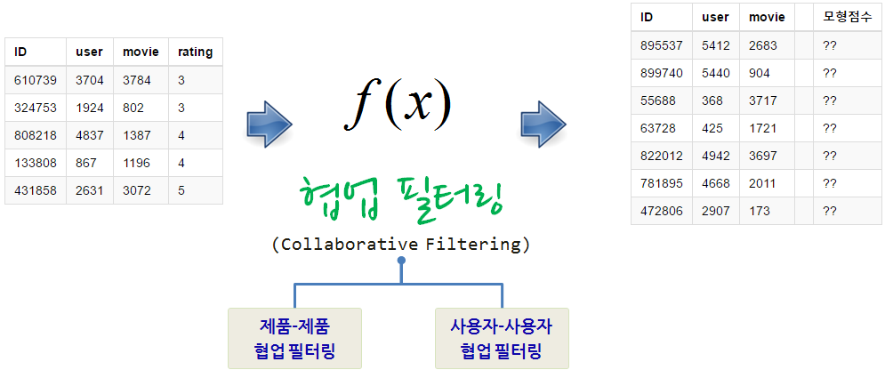
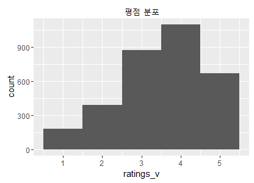
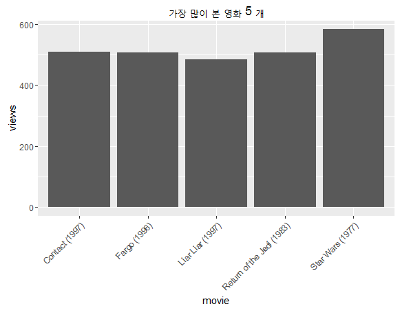
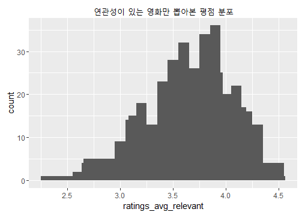
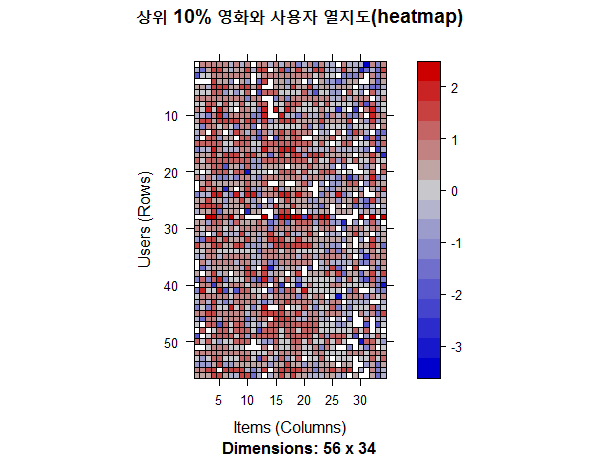
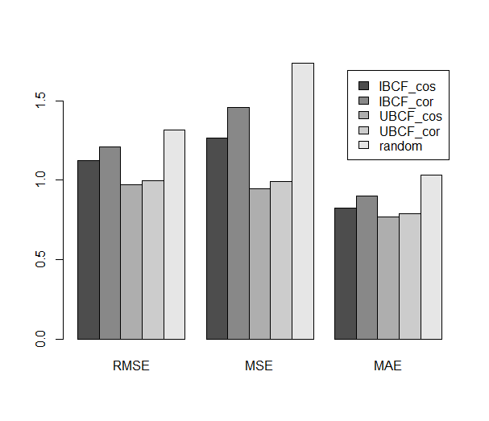
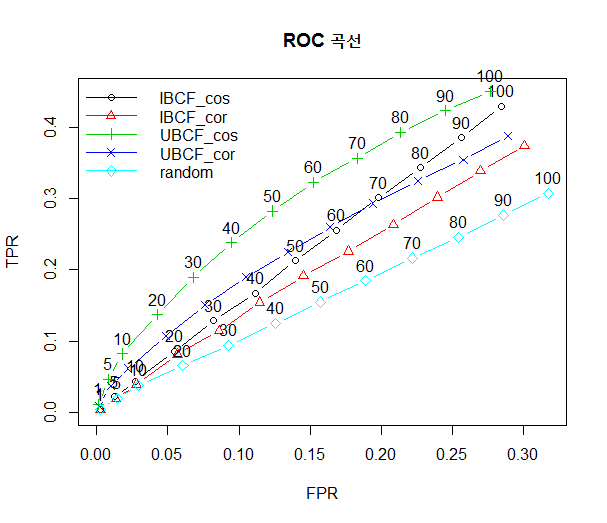

데이터 과학
R 추천시스템
학습 목표
- MovieLens 데이터로 영화 추천시스템을 개발한다.
recommenderlab팩키지를 통해 R코드로 구현한다.- 로컬 컴퓨터에서 작게 개발하고 SparkR을 통해 확장을 시도한다.
1. R 추천 시스템 1 2 3 4
R 추천시스템 개발 작업흐름은 다음과 같다.
- 데이터 수집
- 데이터 정제 및 정규화
- 협업 필터링 적합
- 사용자에게 상위 5개 제품 혹은 서비스 추천
- 협업 필터링 모형 평가 및 타당성

1.1. 영화 추천 훈련데이터 형식 5
행렬 형태의 영화와 관람객 데이터를 다음과 같이 재표현할 수 있다. 즉, 영화관람객이 평가한 영화 평가점수가 다음과 같이 주어진다. 이 정보를 바탕으로 최적의 추천함수(\(f(x)\))를 개발하는 것이 목표다. 기계학습에서 보면 이 데이터가 학습데이터(training data)가 된다. 캐글 훈련데이터 다운로드, train_v2
| ID | user | movie | rating |
|---|---|---|---|
| 610739 | 3704 | 3784 | 3 |
| 324753 | 1924 | 802 | 3 |
| 808218 | 4837 | 1387 | 4 |
| 133808 | 867 | 1196 | 4 |
| 431858 | 2631 | 3072 | 5 |
1.2. 협업 필터링 모형
- 콘텐츠 기반 필터링 : 사용자 프로파일 혹은 제품(영화 등) 프로파일 정보를 활용하여 추천하는 알고리즘
- 협업 필터링
- 제품-제품 협업 필터링 : 사용자에게 사용자가 구매한 것과 가장 유사한 제품을 추천하는 알고리즘
- 사용자-사용자 협업 필터링 : 사용자에게 유사한 사용자가 구매한 것과 가장 유사한 제품을 추천하는 알고리즘
상품추천을 위한 훈련데이터를 학습하여 다양한 모형을 적합시키고, 실제 영화추천 데이터에 결과값을 붙여 실제 운영시스템에 배포하는 것으로 요약된다.
1.3. 실제 영화 추천 데이터
테스트 데이터(test data)라고 부르기도 하고, 결국 신규 혹은 기존 고객에게 제품을 추천할 제품을 정량화하는 것에 불과하다. 캐글 테스트 데이터 다운로드, test_v2
| ID | user | movie | 모형점수 | |
|---|---|---|---|---|
| 895537 | 5412 | 2683 | ?? | |
| 899740 | 5440 | 904 | ?? | |
| 55688 | 368 | 3717 | ?? | |
| 63728 | 425 | 1721 | ?? | |
| 822012 | 4942 | 3697 | ?? | |
| 781895 | 4668 | 2011 | ?? | |
| 472806 | 2907 | 173 | ?? |
2. 무비렌즈 추천데이터 탐색적 분석 6
recommenderlab 협업 필터링 팩키지가 거의 표준으로 자리를 잡아가고 있다. 추천시스템이 실제 적용될 수 있는 사례를 조크 추천시스템에서 찾아볼 수 있다. 물론 데이터는 recommenderlab 팩키지에 포함된 Jester 데이터셋을 사용했다.
2.1. 환경설정과 데이터 가져오기
recommenderlab 팩키지를 설치하고, recommenderlab 라이브러리를 적재하고 나서, recommenderlab 라이브러리에 내장된 MovieLense 데이터를 가져온다. 일반적으로 추천시스템 구축에 사용될 데이터는 엄청 성긴 행렬데이터로 어떻게 저장하느냐에 따라 저장공간을 차지하는 것부터 100배 정도 차이가 발생하는데 일반적이다.
##====================================================================================
## 1. 추천시스템: 환경설정
##====================================================================================
if(!"recommenderlab" %in% rownames(installed.packages())){
install.packages("recommenderlab")}
library(recommenderlab)
##====================================================================================
## 2. 무비렌즈 데이터
##====================================================================================
data(MovieLense)
MovieLense
# 943 x 1664 rating matrix of class ‘realRatingMatrix’ with 99392 ratings.
object.size(MovieLense)
# 1388448 bytes
object.size(as(MovieLense, "matrix"))
# 12740464 bytes무비렌즈 데이터는 \(943 \times 1664\) 크기를 갖는 행렬로 간주할 경우 행렬 각 원소를 8 바이트(64비트, numeric)로 표현한다고 가정하면 12.7 MByte(12,740,464)가 필요한데 엄청 성긴 특성을 이용하여 저장하면 1.38 MByte(1,388,448)만 필요하다. 따라서, 약 9:1 저장공간 차이를 보여준다.
친숙한 데이터프레임으로 변환시켜 자료구조를 살펴보자.
# 친숙한 데이터프레임으로 변환
ml.df <- as(MovieLense, "data.frame")
head(ml.df) user item rating
1 1 Toy Story (1995) 5
453 1 GoldenEye (1995) 3
584 1 Four Rooms (1995) 4
674 1 Get Shorty (1995) 3
883 1 Copycat (1995) 3
969 1 Shanghai Triad (Yao a yao yao dao waipo qiao) (1995) 52.2. 평점 데이터 탐색적 분석
2.2.1. 전체 평점 분포 분석
MovieLense@data 데이터를 엄청 긴 벡터(\(943 \times 1664 = 1569152\))로 변환한다. 그리고 나서 평점 데이터 내부를 살펴본다. 0,1,2,3,4,5 값이 관측되는데 여기서 0은 무응답으로 추천시스템을 통해 사실 예측해서 넣어야 되는 값이기도 하다.
ratings_v <- as.vector(MovieLense@data)
unique(ratings_v)[1] 5 4 0 3 1 2table 함수를 통해서 데이분포를 살펴보면, 무응답이 엄청나게 많고, 평점에 대한 빈도를 함께 살펴볼 수도 있다.
ratings_tbl <- table(ratings_v)
ratings_tblratings_v
0 1 2 3 4 5
1469760 6059 11307 27002 33947 21077 결측점을 제거하고, 시각화를 통해 영화 전체 평점 분포를 살펴본다.
ratings_v <- vector_ratings[ratings_v != 0]
qplot(ratings_v, bins=5) + ggtitle("평점 분포")
2.2.2. 가장 많이 본 영화 상위 5개
전체 평점에 대한 부분을 파악했으니, 이제는 가장 인기가 많은 영화에 대해 살펴본다. colCounts 함수를 사용해서 영화당 얼마나 많은 사용자가 봤는지 살펴본다. 출력결과를 data.frame 함수를 사용해서 데이터프레임으로 변환시켜 ggplot으로 시각화한다.
library(ggplot2)
views_per_movie <- colCounts(MovieLense)
views_tbl <- data.frame(
movie = names(views_per_movie),
views = views_per_movie
)
views_tbl <- views_tbl[order(views_tbl$views, decreasing = TRUE), ]
head(views_tbl) movie views
Star Wars (1977) Star Wars (1977) 583
Contact (1997) Contact (1997) 509
Fargo (1996) Fargo (1996) 508
Return of the Jedi (1983) Return of the Jedi (1983) 507
Liar Liar (1997) Liar Liar (1997) 485
English Patient, The (1996) English Patient, The (1996) 481ggplot(views_tbl[1:5, ], aes(x = movie, y = views)) +
geom_bar(stat="identity") + theme(axis.text.x = element_text(angle = 45, hjust = 1)) + ggtitle("가장 많이 본 영화 5 개")
2.2.3. 연관성 있는 영화만 뽑아본 평점 분포
적어도 영화를 100명이상 본 것으로 한정하여 평점분포를 살펴본다.
ratings_avg <- colMeans(MovieLense)
ratings_avg_relevant <- ratings_avg[views_per_movie > 100]
qplot(ratings_avg_relevant) + stat_bin(binwidth = 0.1) +
ggtitle(paste("연관성이 있는 영화만 뽑아본 평점 분포"))
2.3. 데이터 전처리
협업 필터링 추천모형에 적용될 데이터를 생성시키기 위해 관련성 높은 데이터만 선정하여 준비한다. 이를 위해 적어도 영화당 100명 이상 본 영화, 영화당 최소 50명이상 평점을 매긴 것을 기준으로 추천모형 개발에 준비할 데이터를 한정하여 준비한다.
ratings_movies <- MovieLense[rowCounts(MovieLense) > 50,
colCounts(MovieLense) > 100]
ratings_movies추천 행렬 크기가 상당히 줄어든 것을 확인할 수 있다.
560 x 332 rating matrix of class ‘realRatingMatrix’ with 55298 ratings.2.3.1. 데이터 정규화
상위 10%만 뽑아서 image 함수로 시각화를 하고 normalize 함수를 통해 정규화를 통해 모형 데이터를 준비한다.
# 상위 10 %만 탐색적 분석
min_movies <- quantile(rowCounts(ratings_movies), 0.90)
min_users <- quantile(colCounts(ratings_movies), 0.90)
# 정규화
ratings_movies_norm <- normalize(ratings_movies)
# visualize the normalized matrix
image(ratings_movies_norm[rowCounts(ratings_movies_norm) > min_movies,
colCounts(ratings_movies_norm) > min_users], main = "상위 10% 영화와 사용자 열지도(heatmap)")
3. 무비렌즈 추천모형 개발
탐색적 자료분석 과정을 통해서 협업필터링 모형 개발에 사용될 데이터 준비가 완료되어서 훈련데이터와 검증데이터로 나누고, 이를 실제 적용할 테스트 데이터로 준비하는 과정을 살펴본다.
추천 후보모형과 모수를 설정하여 협업 필터링 모형에 적합시킬 준비를 한다. 무작위 추천을 기반으로 두고 제품과 고객 기반 추천한 것을 비교하여 최적의 모형을 선정한다. 협업 필터링에 코사인과 피어슨 상관계수도 모형에 두고 적합을 시킨다.
- IBCF: 제품(아이템) 기반 협업 필터링 모형
- UBCF: 고객(사용자) 기반 협업 필터링 모형
- RANDOM: 무작위 추천
#-------------------------------------------------------------------------------------
# 5.1. 추천 데이터 준비
#-------------------------------------------------------------------------------------
library("recommenderlab")
library("ggplot2")
data(MovieLense)
ratings_movies <- MovieLense[rowCounts(MovieLense) > 50,
colCounts(MovieLense) > 100]
ratings_movies
#-------------------------------------------------------------------------------------
# 5.2. 추천 후보 모형 및 튜닝 설정
#-------------------------------------------------------------------------------------
percentage_training <- 0.8
items_to_keep <- 15
rating_threshold <- 3
n_eval <- 1
eval_scheme <- evaluationScheme(data = ratings_movies, method = "split",
train = percentage_training,
given = items_to_keep,
goodRating = rating_threshold,
k = n_eval)
eval_scheme
algorithms_to_evaluate <- list(
IBCF_cos = list(name = "IBCF", param = list(method ="cosine")),
IBCF_cor = list(name = "IBCF", param = list(method ="pearson")),
UBCF_cos = list(name = "UBCF", param = list(method ="cosine")),
UBCF_cor = list(name = "UBCF", param = list(method ="pearson")),
random = list(name = "RANDOM", param = NULL)
)
n_recommendations <- c(1, 5, seq(10, 100, 10))RMSE, MSE, MAE 기준으로 5개 모형을 평가하면 UBCF_cos가 가장 좋은 결과를 보여주고 있어 이를 최종 모형으로 선정한다.
#-------------------------------------------------------------------------------------
# 5.3. 최적 모형 선정
#-------------------------------------------------------------------------------------
results <- evaluate(eval_scheme, algorithms_to_evaluate, type = "ratings")
plot(results)
sapply(results, class) == "evaluationResults"
lapply(results, avg)
sapply(results, avg) IBCF_cos IBCF_cor UBCF_cos UBCF_cor random
RMSE 1.1242008 1.2076277 0.9738573 0.9960761 1.316830
MSE 1.2638274 1.4583646 0.9483981 0.9921677 1.734040
MAE 0.8258006 0.9024703 0.7670442 0.7893166 1.033312
최적모형으로 선정된 피어슨 상관을 적용한 사용자기반 협업필터링을 다른 모형과 비교하여 살펴본다.
#-------------------------------------------------------------------------------------
# 5.4. 후보모형과 최적 모수 선정 현황 살펴보기
#-------------------------------------------------------------------------------------
recom_results <- evaluate(x = eval_scheme, method = algorithms_to_evaluate, n = n_recommendations)
sapply(recom_results, class) == "evaluationResults"
avg_matrices <- lapply(recom_results, avg)
plot(recom_results, annotate = c(1,3,5), legend = "topleft")
title("ROC 곡선")
4. 제품(영화) 추천
최적의 모형을 확인했기 때문에 동일한 설정으로 모형을 생성시키고, 신규 데이터가 나오는 경우 이를 적합시킨다. 모형데이터와 테스트 데이터를 8:2로 준비한다.
#-------------------------------------------------------------------------------------
# 5.1. 추천 데이터 준비
#-------------------------------------------------------------------------------------
library("recommenderlab")
library("ggplot2")
data(MovieLense)
ratings_movies <- MovieLense[rowCounts(MovieLense) > 50,
colCounts(MovieLense) > 100]
ratings_movies
#-------------------------------------------------------------------------------------
# 5.2. 최적모형 데이터 준비
#-------------------------------------------------------------------------------------
train_smpl <- sample(x = c(TRUE, FALSE), size = nrow(ratings_movies),
replace = TRUE, prob = c(0.8, 0.2))
recc_data_train <- ratings_movies[train_smpl, ]
recc_data_test <- ratings_movies[!train_smpl, ]4.1. 최적 모형 적합
피어슨 상관으로 유사성을 평가한 사용자 협업 필터링 알고리즘을 적용한다.
#-------------------------------------------------------------------------------------
# 5.3. 최적모형 적합
#-------------------------------------------------------------------------------------
recommender_models <- recommenderRegistry$get_entries(dataType ="realRatingMatrix")
recommender_models$UBCF_realRatingMatrix$parameters
recc_model <- Recommender(data = recc_data_train, method = "UBCF",
parameter = list(method = "pearson", nn=15))
getModel(recc_model)4.2. 영화 추천
테스트 데이터에 있는 7번째 사용자에게 영화를 5개 추천한다.
n_recommended <- 5
recc_predicted <- predict(object = recc_model, newdata = recc_data_test, n = n_recommended)
recc_predicted
class(recc_predicted)
slotNames(recc_predicted)
recc_user_7 <- recc_predicted@items[[7]]
movies_user_7 <- recc_predicted@itemLabels[recc_user_7]
movies_user_7[1] "Blues Brothers, The (1980)"
[2] "This Is Spinal Tap (1984)"
[3] "Raiders of the Lost Ark (1981)"
[4] "Amadeus (1984)"
[5] "One Flew Over the Cuckoo's Nest (1975)"테스트 데이터에 있는 전체 사용자에게 행렬을 추천하는 하는 코드는 다음과 같다.
recc_matrix <- sapply(recc_predicted@items, function(x){
colnames(ratings_movies)[x]
})
recc_matrix[, 1:3] 3
[1,] "Fugitive, The (1993)"
[2,] "Star Wars (1977)"
[3,] "Shawshank Redemption, The (1994)"
[4,] "Empire Strikes Back, The (1980)"
[5,] "Indiana Jones and the Last Crusade (1989)"
8
[1,] "Remains of the Day, The (1993)"
[2,] "Like Water For Chocolate (Como agua para chocolate) (1992)"
[3,] "Annie Hall (1977)"
[4,] "Room with a View, A (1986)"
[5,] "English Patient, The (1996)"
15
[1,] "Empire Strikes Back, The (1980)"
[2,] "Braveheart (1995)"
[3,] "Casablanca (1942)"
[4,] "Bridge on the River Kwai, The (1957)"
[5,] "Psycho (1960)"